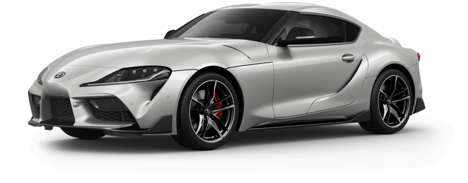
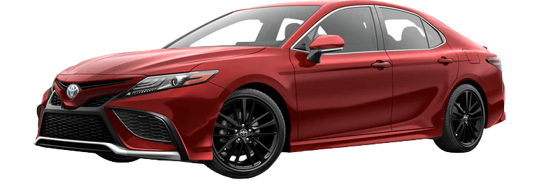
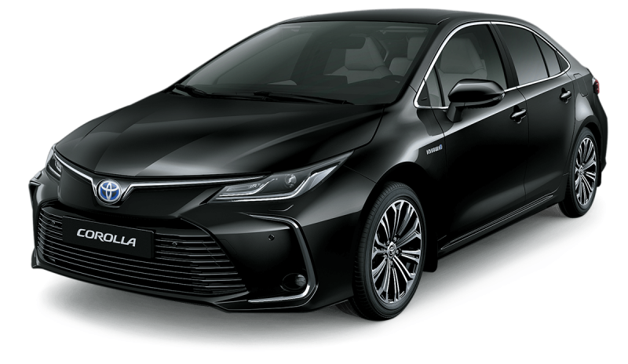
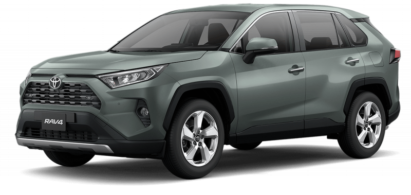
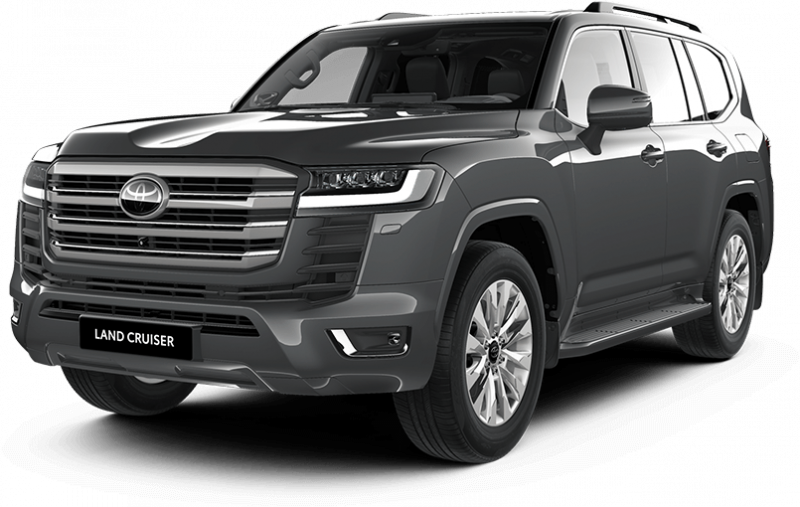

Toyota GR Supra
The Toyota GR Supra is a modern sports car that combines cutting-edge technology with iconic design. It offers thrilling performance, precise handling, and a dynamic driving experience.
- Engine: 3.0L Turbocharged Inline-6
- Power: 382 hp
- 0-60 mph: 3.9 seconds
- Transmission: 8-speed automatic
- Features: Adaptive suspension, active differential, and sport-tuned exhaust
- Interior: Driver-focused cockpit, leather seats, and advanced multimedia system

Toyota Camry
The Toyota Camry is a mid-size car that has been produced by Toyota since 1982. The latest model offers a refined design, excellent fuel efficiency, and advanced safety features.
- Engine: 2.5L Dynamic Force 4-cylinder
- Power: 203 hp
- Fuel Economy: 28/39 mpg city/highway
- Transmission: 8-speed automatic
- Safety: Toyota Safety Sense 2.5+, Pre-Collision System, Lane Departure Alert

Toyota Corolla
The Toyota Corolla is a compact car known for its reliability and efficiency. The latest model features a sleek design, advanced technology, and a comfortable interior.
- Engine: 1.8L 4-cylinder
- Power: 139 hp
- Fuel Economy: 30/38 mpg city/highway
- Transmission: Continuously Variable Transmission (CVT)
- Safety: Toyota Safety Sense 2.0, Pre-Collision System, Lane Tracing Assist

Toyota RAV4
The Toyota RAV4 is a compact crossover SUV that combines style, performance, and versatility. It offers a spacious interior, advanced safety features, and is available in both gasoline and hybrid variants.
- Engine: 2.5L 4-cylinder
- Power: 203 hp
- Fuel Economy: 27/35 mpg city/highway
- Transmission: 8-speed automatic
- Safety: Toyota Safety Sense 2.0, Blind Spot Monitor, Rear Cross-Traffic Alert

Toyota Land Cruiser
The Toyota Land Cruiser is a full-size SUV known for its legendary durability, off-road capability, and luxury features. It's a vehicle that has been trusted by adventurers and families alike for decades.
- Engine: 5.7L V8
- Power: 381 hp
- Fuel Economy: 13/17 mpg city/highway
- Transmission: 8-speed automatic
- Off-Road Features: Multi-Terrain Select, Crawl Control, and Kinetic Dynamic Suspension System
- Interior: Premium leather seats, advanced infotainment system, and spacious cabin